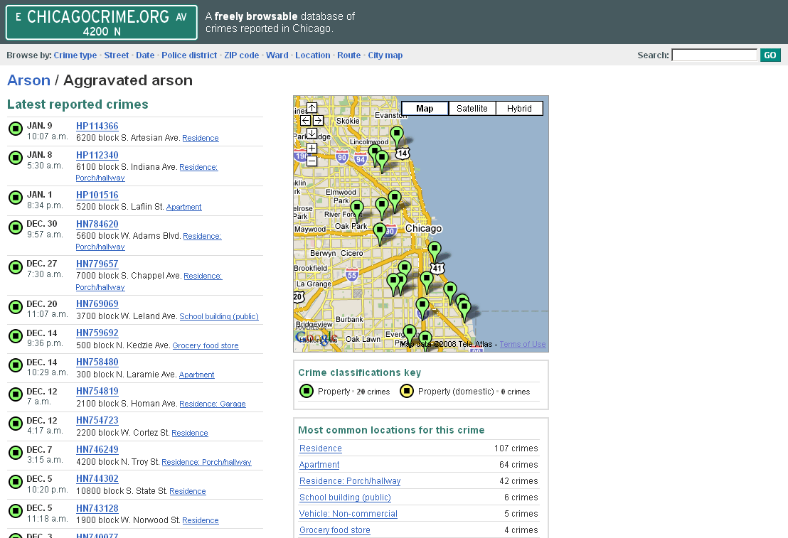

One of the most important features of Google Maps, from the point of view of web-based GIS, is that users are able to plot their own data (or data taken from a remote third party) on top of a base map provided by Google. The use of Google Maps as a base map on which to plot further data quickly became referred to as a 'map mashup' (the phrase is lifted from pop music). A generic characteristic of a mashup is that the map application appears on the web page of a third party, without any apparent direct input by Google. That is, a novice user who did not immediately recognize the layout, drawing styles and iconography of a Google Map would not be aware that the map was using Google Maps as it's base.
The first such mashup to have been produced using Google Maps is generally identified as www.housingmaps.com. HousingMaps integrates two data sources: base data taken from Google Maps, and information on properties for sale or rent taken from craigslist, a popular site that allows free placing of classified ads. The interface is simple: a map occupies most of the screen, and there are some simple filters that allow users to select by city and by price bracket.
The site is typical of simple mashups. A number of markers are drawn on the
base map, and these link to data taken from the third party source. When
markers are defined in a Google Map, they require location information, but
also allow further data to be associated with them (typically text and
graphics). Thus, by clicking on one of the markers, a popup window shows images
and gives details of the indvidual property.
The site usually identified as being the second mashup produced is www.chicagocrime.org. ChicagoCrime uses reported crime data, as collated by the Chicago police department, and maps the locations at which these crimes have been reported. The figure below shows reported cases of aggravated arson. The site integrates a rather more complex and varied data source than the property data in the HousingMaps example, and the site contains multiple pages to drive the mashup application.

ChicagoCrime: Incidences of aggravated arson
These early examples are pretty simple by today's standards. Here's a more recent one that I like from Weather Spark . You can even look up the weather on the day you were born!
If you are interested in the different types of mash-ups that can be made, have a look at the following:
Have a search around and see what mashups you can find. Any really good/bizarre ones - e-mail me!